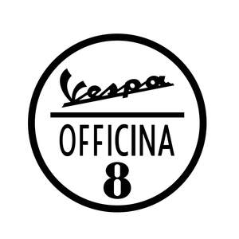

Trade Mark Journal No.2025/028 11 July 2025
UK00004193342 23 April 2025 (9,12,25)

- Class 9
- Data processing equipment; downloadable computer programs; recorded computer operating programs; recorded computer programs; recorded computer software; measuring instruments; magnetic data carrier; processors being central processing units; downloadable computer software applications; electric accumulators; electric batteries; external batteries; sirens; chargers for electric batteries; portable chargers; flashing safety lights; radios; speed checking apparatus for vehicles; speedometers for vehicles; vehicle breakdown warning triangles; safety goggles; protective face shields for protective helmets; protective helmets; safety helmets; articles of protective clothing for motorcyclists for protection against accident or injury, irradiation and fire; articles of protective clothing for wear by motorcyclists for protection against accidents or injury, namely, safety boots and safety gloves; fireproof motorcycle racing suits for safety purposes; computers; mouse pads; computer mice; USB cables; USB adapters; blank USB flash drives; electronic pens for visual display units; magnetically encoded credit cards and payment cards; wireless headsets for use with mobile telephones; headphones; headsets; diagnostic software designed for maintenance and repair of motor vehicles; pre-recorded compact disks containing vehicle owner manuals and software for managing the vehicle maintenance schedule; video game cartridges; computer game programs; mobile phones; portable media players; protective covers for mobile phones; protective covers for portable multimedia players; protective covers for audio reproduction devices; protective covers for palmtops; protective covers for electronic agendas; protective covers for photographic cameras; protective covers for film cameras; protective covers and cases for tablet computers; cases especially made for photographic apparatus and instruments; eyeglass cases; spectacles; spectacle frames; eyeglass chains; eyeglass cords; chains and cords for sunglasses; optical lenses; optical corrective lenses ; lenses for eyeglasses; video game cassettes; video game discs; memory cards for video game machines; satellite navigational apparatus, namely, a global positioning system (GPS); multimedia computer software platforms for mobile connectivity and satellite navigation; decorative magnets.
- Class 12
- Two-wheeled vehicles; electrically powered scooters; electric push scooters [vehicles]; bodies for two-wheeled vehicles; brakes for two-wheeled vehicles; caps for gas tanks for two-wheeled vehicles; luggage nets for two-wheeled vehicles; shock absorbing springs for two-wheeled vehicles; suspension shock absorbers for two-wheeled vehicles; pneumatic tires for two-wheeled vehicles; casings for pneumatic tires for two-wheeled vehicles; non-skid devices for tires for two-wheeled vehicles; adhesive rubber patches for repairing inner tubes for two-wheeled vehicles; tire pumps for two-wheeled vehicles; repair outfits for inner tubes for two-wheeled vehicles; rims for wheels for two-wheeled vehicles; valves for tires for two-wheeled vehicles; anti-theft devices for two-wheeled vehicles; antitheft alarms for two-wheeled vehicles; horns for two-wheeled vehicles; safety seats for children for two-wheeled vehicles; stands for two-wheeled vehicles; mudguards for two-wheeled vehicles; direction signals for two-wheeled vehicles; frames for two-wheeled vehicles; luggage carriers for two-wheeled vehicles; pedals for two-wheeled vehicles; rear view mirrors for two-wheeled vehicles; saddle covers for two-wheeled vehicles; saddlebags adapted for two-wheeled vehicles; saddles for two-wheeled vehicles; engines for two-wheeled vehicles; electric motors for two-wheeled vehicles; bags specially adapted for two-wheeled vehicles, namely, tank bags, sissy bar bags, tail bags, hard-shell bags mounted on either-side of the rear wheel, attached to a framework; cases specially adapted for vehicles; Drive-chain guards for two-wheeled motor vehicles; saddle covers for motorcycles.
- Class 25
- Clothing: coats, mantles, raincoats, dresses, suits, skirts, jackets, trousers, jeans, waistcoats, shirts, tee-shirts, blouses, jerseys, sweaters, blazers, cardigans, stockings, socks, underwear, night gowns, pajamas, bath robes, bathing suits, sports jackets, wind-resistant jackets, blousons, anoraks, tracksuits, sweatshirts, neckties, scarves, shawls, bandanas, foulards, sashes for wear, gloves, belts; waterproof shirts; waterproof pants; waterproof coats; footwear, footwear for motorcyclists, boots, shoes, sport shoes; hats; berets; visors.
PIAGGIO & C. S.P.A.
Representative: Boult Wade Tennant LLP